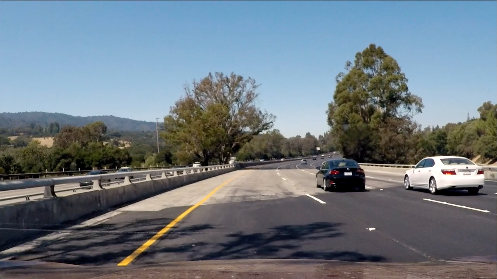
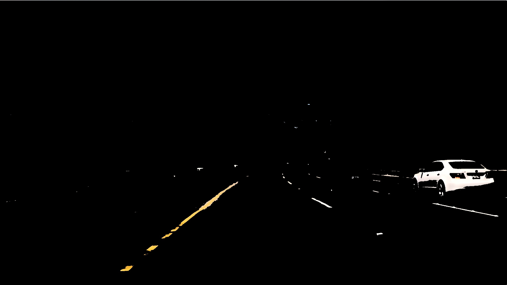
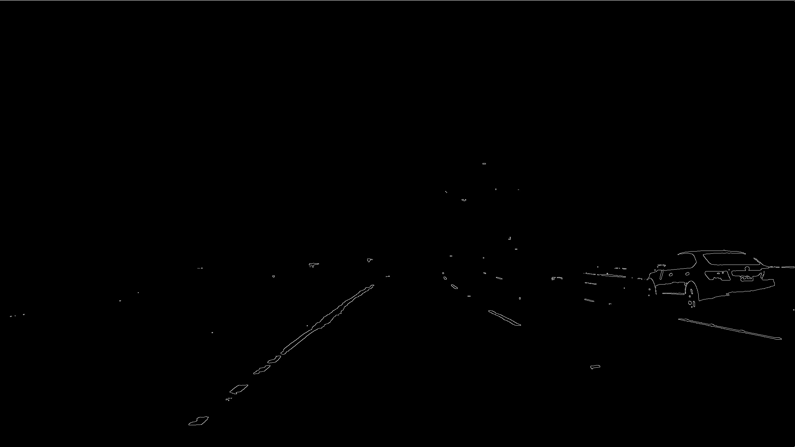
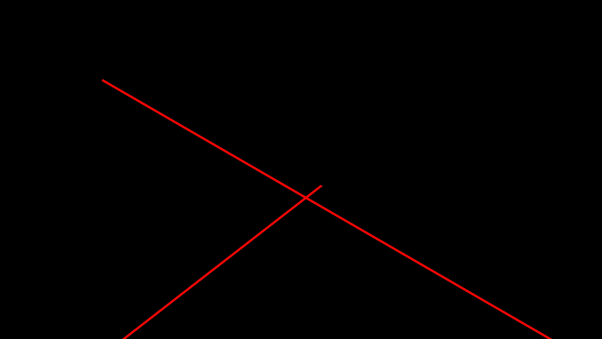
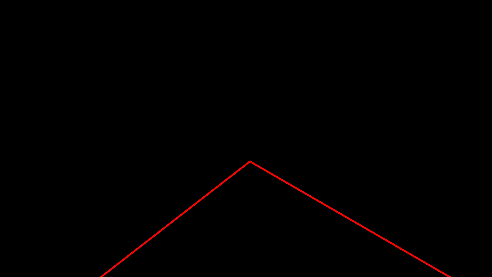
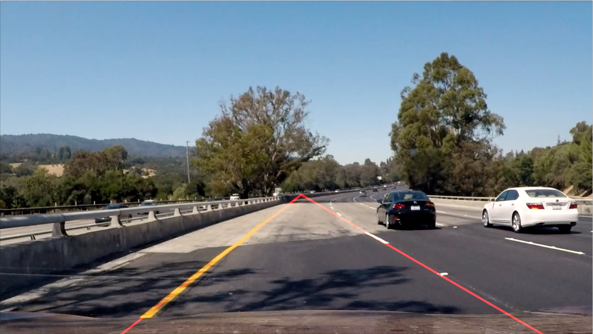

Finding Lane Lines on the Road
Programming Language:
- Python
The goal of this project is to design a pipeline that finds lane lines on the road.
A. Pipeline.
My pipline consists of 7 steps as follows:
- Color selection
- RGB image to gray image
- Gaussian Blur
- Edge detection (Canny)
- Select ROI
- Line detection (Hough)
- Extend detected lines
This pipeline works on images and videos.
1. Color selection: Color selection is used to filter color so that we can remove those pixels which may become noise. E.g. patches on the road. The following is a sample of the processed results:
| Input image | Color Selection |
|  |  |
One can see that the lines of the current lane have already become very clear and there is no extra noise within the ROI (bottom middle part of the image).
2.RGB image to gray image: This is a preprocessing for the flowing operations, e.g. edge detection.
| Color Selection | Gray Image |
 |
3. Gaussian Blur: This operation is also for edge detection. Using Gaussain Blur helps to remove noise from the current image.
4. Edge detection (Canny): We detect lines using Canny Transform.
| Gaussian Blur | Edge Detection |
|
 |
5. Select ROI: To remove the background, e.g. side of road or sky, we select a ROI that just in front of the driver (the bottom middle part of the current image).
| Edge Detection | Select ROI |
6. Line detection (Hough): We use Hough Transform to detect lines. Instead of drawing the detected lines on the image, I implemented a function (detect_hough_line()) to return all detected lines, so that we can do further process.
| Select ROI | Line Detection |
7. Extend detected lines: The lines of a lane consists of solid lines and dashed lines. We want to use a long line to mark the boundaries (left line and right line) of the current lane. Thus: 1. I implemented a function (namely, extend_lines()) to extend the lines, so that all lines can be extended to the bottom of the image and as far as possible. 2. In this function, I also calculate the intersaction of these two lines, so that only the bottom part is marked with lines.
| Line Detection | Extended lines (1) |
 |
 |
| Calculate intersaction (2) | Merge with original image |
|  |  |
B. Potential shortcomings of the current pipeline
- One potential shortcoming would be caused by the fixed parameters in the current solution, e.g. Gaussian Blur parameters, Edge Detection parameters, Line Detection parameters, and so on. Such manually designed fixed parameters may not work in any application sceneria, e.g. ranning day or night.
- Another shortcoming would be caused by the first process (color selection). In real world, the color may change in different environment. Thus, in some specific environment, the current pipline may cannot detect any lines or detect too many lines (caused by noise).
C. Suggest possible improvements to this pipeline
- For the first optential shortcoming, we would like to come up with an idea to adjust the parameters depening on the environment. Thus, the solution can be robust to the change of the environment.
- For the second optential shortcoming, we can use the same strategy as the first suggest. By automatically adjusting the paramters of color selection, the method should work. In addition, we can also replace the color selection with other preprocessing methods to avoid the sensitivity of chosen parameters.